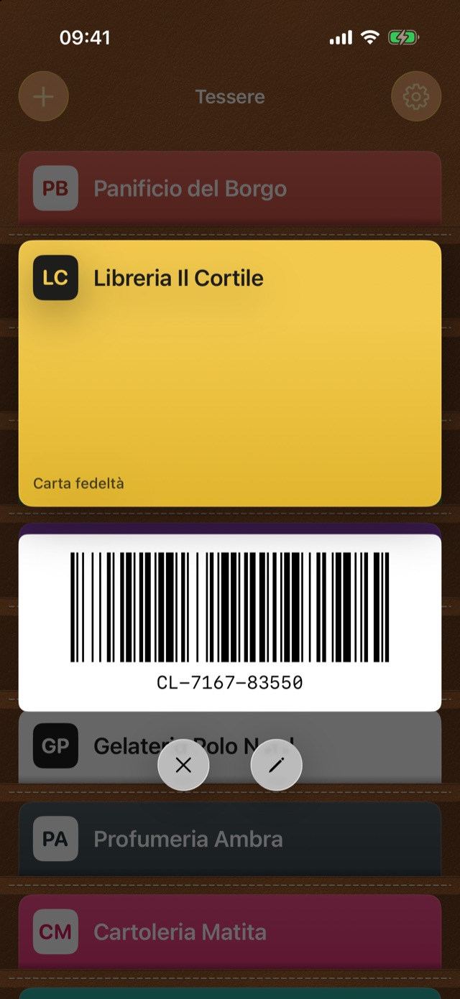
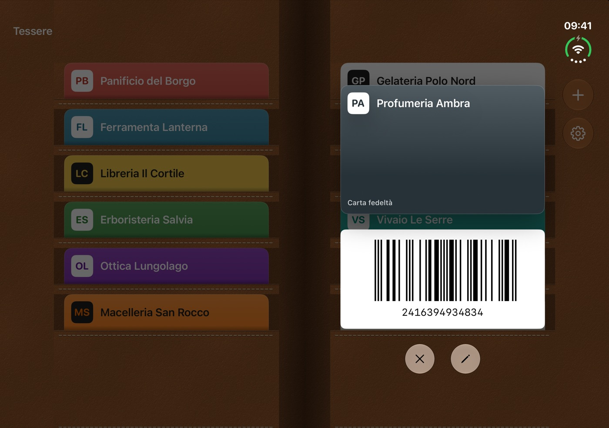
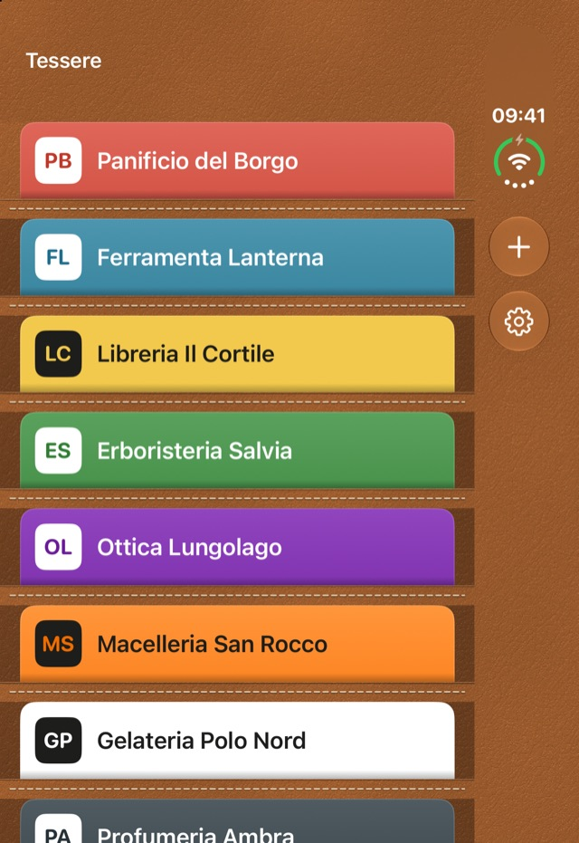

Le tue carte fedeltà, in un porta tessere di pelle.
Scarica su App StoreGratis per iPhone. Su Android arriva presto.
Ogni tessera sta nella sua tasca cucita, e ne vedi il bordo con il nome del negozio. La tocchi, esce dalla tasca, e lo schermo mostra il codice a barre grande e luminoso, pronto da passare alla cassa.

Inquadri il codice a barre con la fotocamera, lo leggi da una foto o scrivi il numero. Scegli il negozio da un catalogo di catene italiane e la tessera prende i suoi colori.
La luminosità sale da sola mentre la tessera è fuori, e torna com'era quando la rimetti in tasca. Il codice si disegna sul telefono e funziona anche senza connessione.
Sedici materiali, il colore del filo e della fodera, le tue iniziali impresse nella pelle. La luce segue l'inclinazione del telefono e, con l'uso, la pelle prende una patina.
Su iPhone Duo il porta tessere si comporta come un portafoglio vero.

Il porta tessere resta nella metà in basso; la tessera e il suo codice stanno in piedi nella metà in alto, rivolti verso il cassiere.
Sullo schermo esterno c'è un porta tessere solo. Sugli altri iPhone è un unico porta tessere alto.

Domande, un problema o un'idea? Scrivimi e ti rispondo appena posso: ivojuniorbettini@gmail.com
Le tessere restano sul telefono: niente account e niente server nostri. L'app è gratis, con un piccolo banner con annunci non personalizzati, mai mentre mostri una tessera; un acquisto unico lo toglie per sempre. Tutti i dettagli sono nell'informativa sulla privacy.
Each card sits in its own stitched pocket, with the shop's name on the edge. Tap it, it slides out, and the screen shows its barcode, large and bright, ready for the till. Add cards by scanning the barcode, reading it from a photo or typing the number.
On iPhone Duo the holder behaves like a real wallet. Open flat, it becomes a two-page book and a card slides out onto its own page. Half-folded, the holder stays on the lower half while the card and its barcode stand up on the upper half, facing the cashier. Closed, the outer display shows a single holder.
Your cards stay on your phone: no account, no servers of ours. The app is free with a small non-personalised banner, never shown while a card is out; a one-off purchase removes it. Privacy policy · ivojuniorbettini@gmail.com